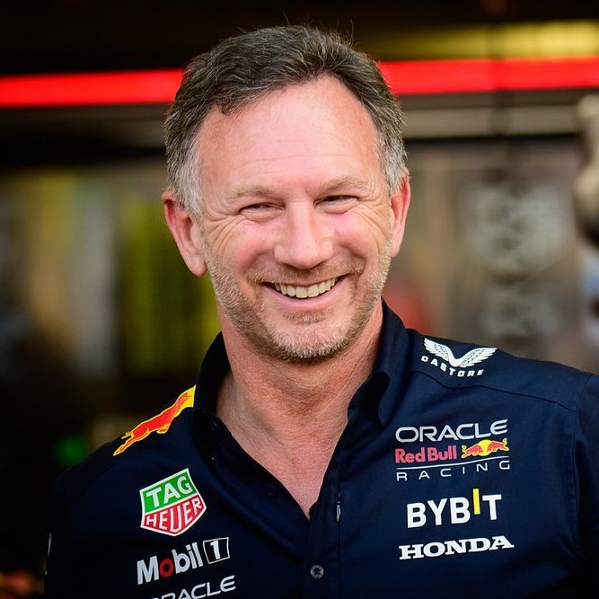
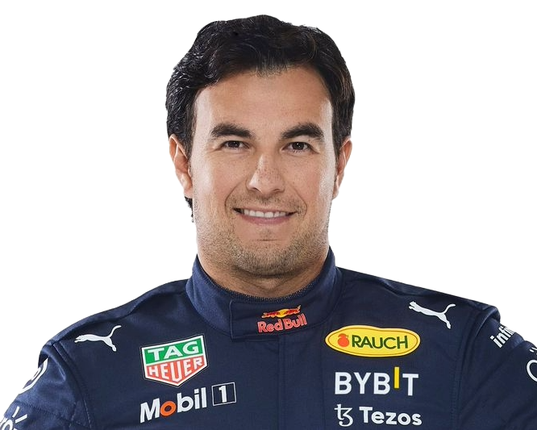
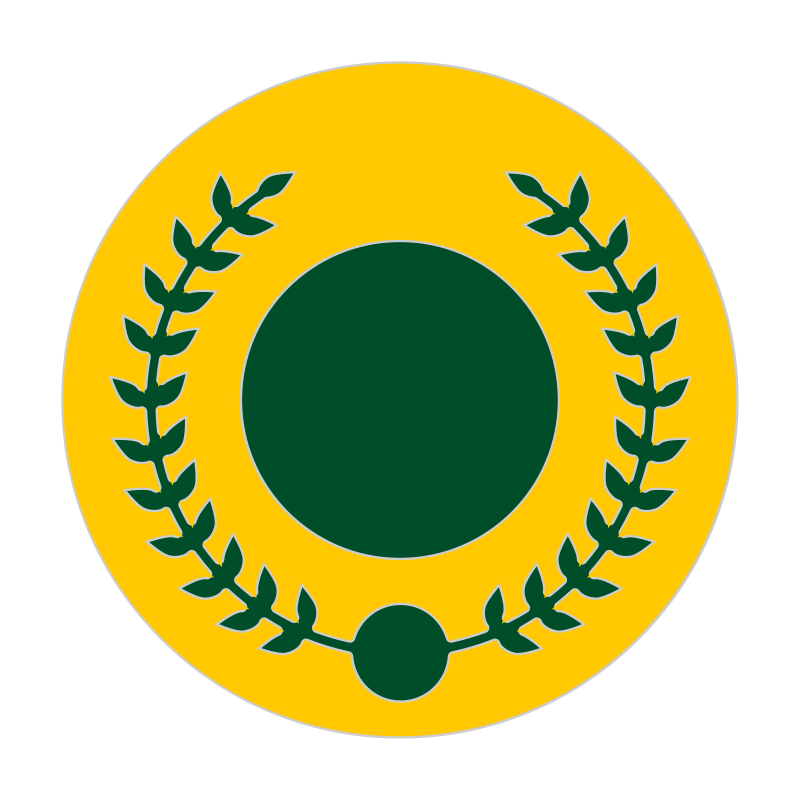
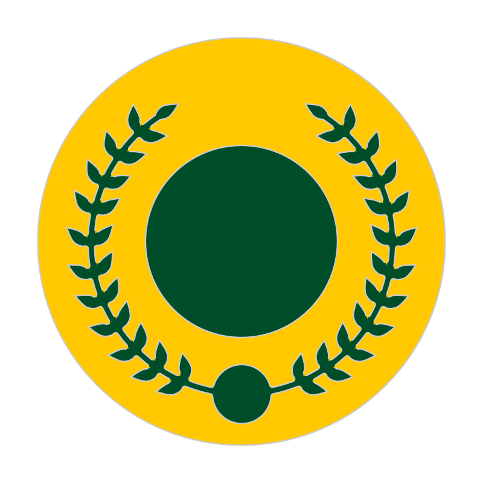

Team
Meet the team.
Team Principal

Christian Horner
Drivers

Max Verstappen

Sergio 'Checo' Perez
 

Meet the team.
Christian Horner
Max Verstappen
Sergio 'Checo' Perez
Born from Red Bull founder Dietrich Mateschitz’s desire to disrupt the status quo in F1 and to bring back the swashbuckling spirit of grand prix racing’s golden age, the Team established itself as a maverick force that played hard off track but worked even harder on it. And with Christian Horner as the sport’s youngest team principal, Red Bull Racing made an immediate impression.
On its debut at the 2005 Australian Grand Prix, the Team scored a double points finish, with David Coulthard finishing fourth and rookie Christian Klien crossing the line in seventh place. The Team went on to finish comfortably mid-table in both 2005 and the following year scored its first podium finish, with Coulthard driving the RB2 to third place at the Monaco Grand Prix.
For 2007, Mark Webber came onboard to join DC and at the European Grand Prix, the Australian scored his first podium finish with the team. His third place at the Nürburging helped the team to fifth place in the Constructors’ standings. The following year saw the Team slide to seventh overall but 2009 brought a major shift in the regulations and the Team’s fortunes.
David Coulthard retired at the end of 2008 to be replaced by Sebastian Vettel. Seb’s arrival coincided with a major reset in the sport’s aerodynamic regulations. The new rules gave the technical team the chance to shine and with the RB5, they produced a winner: Vettel took Red Bull Racing’s first victory, leading home Webber in a 1-2 finish at the Chinese Grand Prix. The car would win five more times in 2009, including Webber’s debut F1 victory at the Nürburgring. The team finished second in the Constructors’ Championship but, perhaps more significantly, it won the final three races of the season.
History was made in 2010. Driving the RB6, Webber and Vettel were title contenders from the start. Their consistent podium finishes secured the Constructors’ Championship at the penultimate round in Brazil. Both drivers went to the final race in Abu Dhabi with a shot at the Drivers’ crown. Vettel emerged triumphant, winning the race to become the sports’ youngest ever World Champion. A record that still stands.
The RB7 and Vettel dominated 2011. The German driver took 11 of the team’s dozen victories and won his second Drivers’ title with four races to spare. The Constructors’ title was confirmed with three races remaining.
The battle was closer in 2012 but once again the Team won the development battle and clinched both titles once again: the Constructors’ title at the penultimate race in Austin and the Drivers’ title, again with Vettel, at a dramatic season finale in Brazil.
The 2013 saw Vettel add another record to his list as he went on second-half rampage, taking a record nine consecutive victories to secure both titles at the Indian Grand Prix, with three races to spare.
Red Bull Racing’s first title since 2013 closed the book on a core set of rules dating back to the start of the hybrid era and in 2022 the sport introduced the largest change to the technical regulations seen in four decades. A new era of ground effect cars began and the Oracle Red Bull Racing RB18 led the way.
2010, 2011, 2012, 2013, 2021, 2022, 2023
Sebastian Vettel X4(2010,2011,2012,2013), Verstappen X3 (2021,2022,2023)